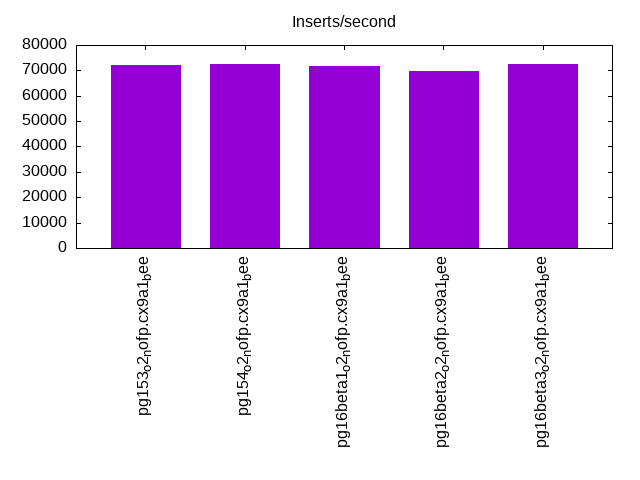

This is a report for the insert benchmark with 800M docs and 1 client(s). It is generated by scripts (bash, awk, sed) and Tufte might not be impressed. An overview of the insert benchmark is here and a short update is here. Below, by DBMS, I mean DBMS+version.config. An example is my8020.c10b40 where my means MySQL, 8020 is version 8.0.20 and c10b40 is the name for the configuration file.
The test server has 8 AMD cores, 16G RAM and an NVMe SSD. It is described here as the Beelink. The benchmark was run with 1 client and there were 1 or 3 connections per client (1 for queries or inserts without rate limits, 1+1 for rate limited inserts+deletes). It uses 1 table. It loads 20M rows per table without secondary indexes, creates secondary indexes, then inserts 200M rows per table with a delete per insert to avoid growing the table. It then does 3 read+write tests for 7200s each that do queries as fast as possible with 100, 500 and then 1000 inserts/second/client concurrent with the queries and 1000 deletes/second to avoid growing the table. The database is cached by Postgres. Clients and the DBMS share one server. The per-database configs are in the per-database subdirectories here.
The tested DBMS are:
The numbers are inserts/s for l.i0 and l.i1, indexed docs (or rows) /s for l.x and queries/s for q*.2. The values are the average rate over the entire test for inserts (IPS) and queries (QPS). The range of values for IPS and QPS is split into 3 parts: bottom 25%, middle 50%, top 25%. Values in the bottom 25% have a red background, values in the top 25% have a green background and values in the middle have no color. A gray background is used for values that can be ignored because the DBMS did not sustain the target insert rate. Red backgrounds are not used when the minimum value is within 80% of the max value.
| dbms | l.i0 | l.x | l.i1 | q100.1 | q500.1 | q1000.1 |
|---|---|---|---|---|---|---|
| pg153_o2_nofp.cx9a1_bee | 72014 | 191641 | 918 | 7428 | 7699 | 7693 |
| pg154_o2_nofp.cx9a1_bee | 72543 | 191549 | 1796 | 7878 | 7790 | 7535 |
| pg16beta1_o2_nofp.cx9a1_bee | 71820 | 196247 | 721 | 7960 | 7712 | 7626 |
| pg16beta2_o2_nofp.cx9a1_bee | 69784 | 193308 | 2094 | 7994 | 7728 | 7572 |
| pg16beta3_o2_nofp.cx9a1_bee | 72424 | 194577 | 1966 | 7553 | 7740 | 7586 |
This table has relative throughput, throughput for the DBMS relative to the DBMS in the first line, using the absolute throughput from the previous table. Values less than 0.95 have a yellow background. Values greater than 1.05 have a blue background.
| dbms | l.i0 | l.x | l.i1 | q100.1 | q500.1 | q1000.1 |
|---|---|---|---|---|---|---|
| pg153_o2_nofp.cx9a1_bee | 1.00 | 1.00 | 1.00 | 1.00 | 1.00 | 1.00 |
| pg154_o2_nofp.cx9a1_bee | 1.01 | 1.00 | 1.96 | 1.06 | 1.01 | 0.98 |
| pg16beta1_o2_nofp.cx9a1_bee | 1.00 | 1.02 | 0.79 | 1.07 | 1.00 | 0.99 |
| pg16beta2_o2_nofp.cx9a1_bee | 0.97 | 1.01 | 2.28 | 1.08 | 1.00 | 0.98 |
| pg16beta3_o2_nofp.cx9a1_bee | 1.01 | 1.02 | 2.14 | 1.02 | 1.01 | 0.99 |
This lists the average rate of inserts/s for the tests that do inserts concurrent with queries. For such tests the query rate is listed in the table above. The read+write tests are setup so that the insert rate should match the target rate every second. Cells that are not at least 95% of the target have a red background to indicate a failure to satisfy the target.
| dbms | q100.1 | q500.1 | q1000.1 |
|---|---|---|---|
| pg153_o2_nofp.cx9a1_bee | 100 | 499 | 998 |
| pg154_o2_nofp.cx9a1_bee | 100 | 499 | 998 |
| pg16beta1_o2_nofp.cx9a1_bee | 100 | 498 | 997 |
| pg16beta2_o2_nofp.cx9a1_bee | 100 | 499 | 998 |
| pg16beta3_o2_nofp.cx9a1_bee | 100 | 499 | 994 |
| target | 100 | 500 | 1000 |
l.i0: load without secondary indexes. Graphs for performance per 1-second interval are here.
Average throughput:
Insert response time histogram: each cell has the percentage of responses that take <= the time in the header and max is the max response time in seconds. For the max column values in the top 25% of the range have a red background and in the bottom 25% of the range have a green background. The red background is not used when the min value is within 80% of the max value.
| dbms | 256us | 1ms | 4ms | 16ms | 64ms | 256ms | 1s | 4s | 16s | gt | max |
|---|---|---|---|---|---|---|---|---|---|---|---|
| pg153_o2_nofp.cx9a1_bee | 99.999 | nonzero | nonzero | 0.031 | |||||||
| pg154_o2_nofp.cx9a1_bee | 99.999 | 0.001 | nonzero | 0.057 | |||||||
| pg16beta1_o2_nofp.cx9a1_bee | 99.999 | nonzero | nonzero | 0.057 | |||||||
| pg16beta2_o2_nofp.cx9a1_bee | 99.999 | nonzero | nonzero | 0.058 | |||||||
| pg16beta3_o2_nofp.cx9a1_bee | 99.999 | nonzero | nonzero | 0.057 |
Performance metrics for the DBMS listed above. Some are normalized by throughput, others are not. Legend for results is here.
ips qps rps rmbps wps wmbps rpq rkbpq wpi wkbpi csps cpups cspq cpupq dbgb1 dbgb2 rss maxop p50 p99 tag 72014 0 30 0.2 106.0 29.4 0.000 0.003 0.001 0.418 8807 22.3 0.122 25 76.5 116.6 0.4 0.031 72217 70098 800m.pg153_o2_nofp.cx9a1_bee 72543 0 30 0.2 103.2 29.6 0.000 0.003 0.001 0.418 8843 22.3 0.122 25 76.5 116.6 3.2 0.057 72719 70720 800m.pg154_o2_nofp.cx9a1_bee 71820 0 30 0.2 99.7 29.4 0.000 0.003 0.001 0.419 8774 22.3 0.122 25 76.5 116.6 1.4 0.057 72118 69816 800m.pg16beta1_o2_nofp.cx9a1_bee 69784 0 30 0.2 99.3 28.4 0.000 0.003 0.001 0.417 8530 23.0 0.122 26 76.5 116.2 2.1 0.058 70023 67962 800m.pg16beta2_o2_nofp.cx9a1_bee 72424 0 31 0.2 104.2 29.7 0.000 0.003 0.001 0.419 8832 22.3 0.122 25 76.5 116.6 2.1 0.057 72624 70483 800m.pg16beta3_o2_nofp.cx9a1_bee
l.x: create secondary indexes.
Average throughput:
Performance metrics for the DBMS listed above. Some are normalized by throughput, others are not. Legend for results is here.
ips qps rps rmbps wps wmbps rpq rkbpq wpi wkbpi csps cpups cspq cpupq dbgb1 dbgb2 rss maxop p50 p99 tag 191641 0 557 69.1 161.6 58.9 0.003 0.369 0.001 0.315 410 12.5 0.002 5 147.0 187.1 10.2 0.004 NA NA 800m.pg153_o2_nofp.cx9a1_bee 191549 0 557 69.1 160.6 59.2 0.003 0.369 0.001 0.316 400 12.5 0.002 5 147.0 187.1 10.2 0.004 NA NA 800m.pg154_o2_nofp.cx9a1_bee 196247 0 571 70.8 164.3 60.4 0.003 0.370 0.001 0.315 402 12.5 0.002 5 147.0 187.1 10.2 0.005 NA NA 800m.pg16beta1_o2_nofp.cx9a1_bee 193308 0 561 69.7 162.5 59.8 0.003 0.369 0.001 0.317 411 12.5 0.002 5 147.0 187.1 10.2 0.004 NA NA 800m.pg16beta2_o2_nofp.cx9a1_bee 194577 0 566 70.2 161.1 60.1 0.003 0.370 0.001 0.316 392 12.5 0.002 5 147.0 187.1 10.2 0.006 NA NA 800m.pg16beta3_o2_nofp.cx9a1_bee
l.i1: continue load after secondary indexes created. Graphs for performance per 1-second interval are here.
Average throughput:
Insert response time histogram: each cell has the percentage of responses that take <= the time in the header and max is the max response time in seconds. For the max column values in the top 25% of the range have a red background and in the bottom 25% of the range have a green background. The red background is not used when the min value is within 80% of the max value.
| dbms | 256us | 1ms | 4ms | 16ms | 64ms | 256ms | 1s | 4s | 16s | gt | max |
|---|---|---|---|---|---|---|---|---|---|---|---|
| pg153_o2_nofp.cx9a1_bee | 83.148 | 16.850 | 0.002 | 0.085 | |||||||
| pg154_o2_nofp.cx9a1_bee | 76.694 | 23.260 | 0.045 | 0.188 | |||||||
| pg16beta1_o2_nofp.cx9a1_bee | 78.473 | 21.526 | 0.001 | 0.069 | |||||||
| pg16beta2_o2_nofp.cx9a1_bee | 81.408 | 18.591 | 0.001 | 0.090 | |||||||
| pg16beta3_o2_nofp.cx9a1_bee | 85.672 | 14.327 | 0.002 | 0.096 |
Delete response time histogram: each cell has the percentage of responses that take <= the time in the header and max is the max response time in seconds. For the max column values in the top 25% of the range have a red background and in the bottom 25% of the range have a green background. The red background is not used when the min value is within 80% of the max value.
| dbms | 256us | 1ms | 4ms | 16ms | 64ms | 256ms | 1s | 4s | 16s | gt | max |
|---|---|---|---|---|---|---|---|---|---|---|---|
| pg153_o2_nofp.cx9a1_bee | 0.002 | 39.147 | 1.191 | 6.672 | 24.172 | 28.817 | nonzero | 0.356 | |||
| pg154_o2_nofp.cx9a1_bee | 0.002 | 57.210 | 1.258 | 6.550 | 24.240 | 10.740 | 0.092 | ||||
| pg16beta1_o2_nofp.cx9a1_bee | 0.001 | 28.285 | 1.190 | 6.415 | 23.869 | 40.240 | nonzero | 0.328 | |||
| pg16beta2_o2_nofp.cx9a1_bee | 0.003 | 62.941 | 1.230 | 6.452 | 23.975 | 5.401 | 0.081 | ||||
| pg16beta3_o2_nofp.cx9a1_bee | 0.001 | 60.328 | 1.126 | 6.401 | 23.725 | 8.421 | 0.087 |
Performance metrics for the DBMS listed above. Some are normalized by throughput, others are not. Legend for results is here.
ips qps rps rmbps wps wmbps rpq rkbpq wpi wkbpi csps cpups cspq cpupq dbgb1 dbgb2 rss maxop p50 p99 tag 918 0 1476 11.9 1684.0 20.1 1.609 13.293 1.835 22.444 3579 12.7 3.901 1107 150.5 180.1 1.3 0.085 350 250 800m.pg153_o2_nofp.cx9a1_bee 1796 0 2952 31.2 3435.9 42.8 1.643 17.766 1.913 24.379 6918 12.6 3.851 561 149.6 189.6 3.4 0.188 1198 599 800m.pg154_o2_nofp.cx9a1_bee 721 0 1161 9.3 1325.0 16.0 1.609 13.136 1.837 22.655 2834 12.9 3.929 1431 150.5 173.6 9.7 0.069 350 250 800m.pg16beta1_o2_nofp.cx9a1_bee 2094 0 3353 26.7 3806.0 42.7 1.601 13.050 1.817 20.888 7879 11.8 3.762 451 150.5 190.5 9.8 0.090 1698 649 800m.pg16beta2_o2_nofp.cx9a1_bee 1966 0 3147 25.1 3572.2 40.1 1.601 13.049 1.817 20.874 7402 12.1 3.765 492 150.5 190.5 8.7 0.096 1300 599 800m.pg16beta3_o2_nofp.cx9a1_bee
q100.1: range queries with 100 insert/s per client. Graphs for performance per 1-second interval are here.
Average throughput:
Query response time histogram: each cell has the percentage of responses that take <= the time in the header and max is the max response time in seconds. For max values in the top 25% of the range have a red background and in the bottom 25% of the range have a green background. The red background is not used when the min value is within 80% of the max value.
| dbms | 256us | 1ms | 4ms | 16ms | 64ms | 256ms | 1s | 4s | 16s | gt | max |
|---|---|---|---|---|---|---|---|---|---|---|---|
| pg153_o2_nofp.cx9a1_bee | 99.545 | 0.452 | 0.002 | 0.002 | 0.014 | ||||||
| pg154_o2_nofp.cx9a1_bee | 99.597 | 0.400 | 0.001 | 0.002 | nonzero | 0.019 | |||||
| pg16beta1_o2_nofp.cx9a1_bee | 99.588 | 0.409 | 0.002 | 0.002 | nonzero | 0.019 | |||||
| pg16beta2_o2_nofp.cx9a1_bee | 99.607 | 0.391 | 0.001 | 0.002 | 0.010 | ||||||
| pg16beta3_o2_nofp.cx9a1_bee | 99.549 | 0.448 | 0.001 | 0.002 | 0.010 |
Insert response time histogram: each cell has the percentage of responses that take <= the time in the header and max is the max response time in seconds. For max values in the top 25% of the range have a red background and in the bottom 25% of the range have a green background. The red background is not used when the min value is within 80% of the max value.
| dbms | 256us | 1ms | 4ms | 16ms | 64ms | 256ms | 1s | 4s | 16s | gt | max |
|---|---|---|---|---|---|---|---|---|---|---|---|
| pg153_o2_nofp.cx9a1_bee | 72.403 | 27.597 | 0.032 | ||||||||
| pg154_o2_nofp.cx9a1_bee | 74.194 | 25.806 | 0.036 | ||||||||
| pg16beta1_o2_nofp.cx9a1_bee | 71.569 | 28.417 | 0.014 | 0.067 | |||||||
| pg16beta2_o2_nofp.cx9a1_bee | 74.653 | 25.347 | 0.033 | ||||||||
| pg16beta3_o2_nofp.cx9a1_bee | 77.042 | 22.958 | 0.036 |
Delete response time histogram: each cell has the percentage of responses that take <= the time in the header and max is the max response time in seconds. For max values in the top 25% of the range have a red background and in the bottom 25% of the range have a green background. The red background is not used when the min value is within 80% of the max value.
| dbms | 256us | 1ms | 4ms | 16ms | 64ms | 256ms | 1s | 4s | 16s | gt | max |
|---|---|---|---|---|---|---|---|---|---|---|---|
| pg153_o2_nofp.cx9a1_bee | 13.667 | 65.583 | 20.750 | 0.011 | |||||||
| pg154_o2_nofp.cx9a1_bee | 0.111 | 99.792 | 0.042 | 0.056 | 0.007 | ||||||
| pg16beta1_o2_nofp.cx9a1_bee | 12.542 | 65.861 | 21.597 | 0.009 | |||||||
| pg16beta2_o2_nofp.cx9a1_bee | 0.056 | 99.806 | 0.028 | 0.111 | 0.010 | ||||||
| pg16beta3_o2_nofp.cx9a1_bee | 0.833 | 99.056 | 0.042 | 0.069 | 0.007 |
Performance metrics for the DBMS listed above. Some are normalized by throughput, others are not. Legend for results is here.
ips qps rps rmbps wps wmbps rpq rkbpq wpi wkbpi csps cpups cspq cpupq dbgb1 dbgb2 rss maxop p50 p99 tag 100 7428 198 1.6 163.5 2.6 0.027 0.218 1.638 26.469 29015 12.7 3.906 137 150.5 190.5 10.0 0.014 7239 5897 800m.pg153_o2_nofp.cx9a1_bee 100 7878 199 1.6 163.0 2.6 0.025 0.207 1.635 26.387 30772 12.5 3.906 127 149.6 189.7 10.0 0.019 7432 5455 800m.pg154_o2_nofp.cx9a1_bee 100 7960 199 1.6 162.7 2.6 0.025 0.204 1.630 26.392 31051 12.6 3.901 127 150.5 190.5 9.9 0.019 7507 5786 800m.pg16beta1_o2_nofp.cx9a1_bee 100 7994 199 1.6 166.3 2.6 0.025 0.203 1.668 26.694 31211 12.5 3.904 125 150.5 190.5 10.0 0.010 7525 5624 800m.pg16beta2_o2_nofp.cx9a1_bee 100 7553 199 1.6 160.5 2.6 0.026 0.215 1.609 26.437 29495 12.6 3.905 133 150.5 190.5 9.9 0.010 7307 5605 800m.pg16beta3_o2_nofp.cx9a1_bee
q500.1: range queries with 500 insert/s per client. Graphs for performance per 1-second interval are here.
Average throughput:
Query response time histogram: each cell has the percentage of responses that take <= the time in the header and max is the max response time in seconds. For max values in the top 25% of the range have a red background and in the bottom 25% of the range have a green background. The red background is not used when the min value is within 80% of the max value.
| dbms | 256us | 1ms | 4ms | 16ms | 64ms | 256ms | 1s | 4s | 16s | gt | max |
|---|---|---|---|---|---|---|---|---|---|---|---|
| pg153_o2_nofp.cx9a1_bee | 99.845 | 0.149 | 0.001 | 0.005 | 0.015 | ||||||
| pg154_o2_nofp.cx9a1_bee | 99.871 | 0.124 | 0.001 | 0.004 | 0.015 | ||||||
| pg16beta1_o2_nofp.cx9a1_bee | 99.855 | 0.139 | 0.001 | 0.005 | 0.016 | ||||||
| pg16beta2_o2_nofp.cx9a1_bee | 99.868 | 0.128 | nonzero | 0.004 | 0.015 | ||||||
| pg16beta3_o2_nofp.cx9a1_bee | 99.876 | 0.120 | nonzero | 0.004 | 0.015 |
Insert response time histogram: each cell has the percentage of responses that take <= the time in the header and max is the max response time in seconds. For max values in the top 25% of the range have a red background and in the bottom 25% of the range have a green background. The red background is not used when the min value is within 80% of the max value.
| dbms | 256us | 1ms | 4ms | 16ms | 64ms | 256ms | 1s | 4s | 16s | gt | max |
|---|---|---|---|---|---|---|---|---|---|---|---|
| pg153_o2_nofp.cx9a1_bee | 90.894 | 9.106 | 0.032 | ||||||||
| pg154_o2_nofp.cx9a1_bee | 90.942 | 9.058 | 0.032 | ||||||||
| pg16beta1_o2_nofp.cx9a1_bee | 90.125 | 9.875 | 0.032 | ||||||||
| pg16beta2_o2_nofp.cx9a1_bee | 91.414 | 8.586 | 0.032 | ||||||||
| pg16beta3_o2_nofp.cx9a1_bee | 92.589 | 7.411 | 0.033 |
Delete response time histogram: each cell has the percentage of responses that take <= the time in the header and max is the max response time in seconds. For max values in the top 25% of the range have a red background and in the bottom 25% of the range have a green background. The red background is not used when the min value is within 80% of the max value.
| dbms | 256us | 1ms | 4ms | 16ms | 64ms | 256ms | 1s | 4s | 16s | gt | max |
|---|---|---|---|---|---|---|---|---|---|---|---|
| pg153_o2_nofp.cx9a1_bee | 0.011 | 68.275 | 31.714 | 0.026 | |||||||
| pg154_o2_nofp.cx9a1_bee | 3.214 | 96.506 | 0.086 | 0.194 | 0.009 | ||||||
| pg16beta1_o2_nofp.cx9a1_bee | 1.125 | 39.642 | 0.056 | 58.125 | 1.053 | 0.022 | |||||
| pg16beta2_o2_nofp.cx9a1_bee | 2.328 | 97.406 | 0.078 | 0.189 | 0.008 | ||||||
| pg16beta3_o2_nofp.cx9a1_bee | 2.922 | 96.800 | 0.086 | 0.192 | 0.009 |
Performance metrics for the DBMS listed above. Some are normalized by throughput, others are not. Legend for results is here.
ips qps rps rmbps wps wmbps rpq rkbpq wpi wkbpi csps cpups cspq cpupq dbgb1 dbgb2 rss maxop p50 p99 tag 499 7699 805 6.4 941.7 12.1 0.105 0.855 1.887 24.790 31458 15.4 4.086 160 150.5 185.5 10.0 0.015 7288 6936 800m.pg153_o2_nofp.cx9a1_bee 499 7790 803 6.4 946.1 12.2 0.103 0.843 1.897 24.951 31790 13.8 4.081 142 149.7 185.0 10.0 0.015 7364 7033 800m.pg154_o2_nofp.cx9a1_bee 498 7712 805 6.4 945.1 12.1 0.104 0.853 1.896 24.880 31525 14.5 4.088 150 150.5 185.5 9.9 0.016 7318 7017 800m.pg16beta1_o2_nofp.cx9a1_bee 499 7728 801 6.4 938.1 12.1 0.104 0.848 1.881 24.780 31566 13.9 4.085 144 150.5 186.6 10.0 0.015 7368 7081 800m.pg16beta2_o2_nofp.cx9a1_bee 499 7740 801 6.4 945.1 12.1 0.103 0.846 1.895 24.917 31603 13.8 4.083 143 150.5 185.7 10.0 0.015 7350 7081 800m.pg16beta3_o2_nofp.cx9a1_bee
q1000.1: range queries with 1000 insert/s per client. Graphs for performance per 1-second interval are here.
Average throughput:
Query response time histogram: each cell has the percentage of responses that take <= the time in the header and max is the max response time in seconds. For max values in the top 25% of the range have a red background and in the bottom 25% of the range have a green background. The red background is not used when the min value is within 80% of the max value.
| dbms | 256us | 1ms | 4ms | 16ms | 64ms | 256ms | 1s | 4s | 16s | gt | max |
|---|---|---|---|---|---|---|---|---|---|---|---|
| pg153_o2_nofp.cx9a1_bee | 99.783 | 0.209 | 0.002 | 0.005 | 0.016 | ||||||
| pg154_o2_nofp.cx9a1_bee | 99.806 | 0.186 | 0.001 | 0.007 | 0.016 | ||||||
| pg16beta1_o2_nofp.cx9a1_bee | 99.810 | 0.182 | 0.001 | 0.007 | 0.015 | ||||||
| pg16beta2_o2_nofp.cx9a1_bee | 99.811 | 0.181 | 0.001 | 0.007 | 0.015 | ||||||
| pg16beta3_o2_nofp.cx9a1_bee | 99.808 | 0.185 | 0.001 | 0.006 | 0.016 |
Insert response time histogram: each cell has the percentage of responses that take <= the time in the header and max is the max response time in seconds. For max values in the top 25% of the range have a red background and in the bottom 25% of the range have a green background. The red background is not used when the min value is within 80% of the max value.
| dbms | 256us | 1ms | 4ms | 16ms | 64ms | 256ms | 1s | 4s | 16s | gt | max |
|---|---|---|---|---|---|---|---|---|---|---|---|
| pg153_o2_nofp.cx9a1_bee | 97.983 | 2.017 | 0.029 | ||||||||
| pg154_o2_nofp.cx9a1_bee | 97.651 | 2.349 | 0.029 | ||||||||
| pg16beta1_o2_nofp.cx9a1_bee | 97.328 | 2.672 | 0.029 | ||||||||
| pg16beta2_o2_nofp.cx9a1_bee | 97.112 | 2.888 | 0.029 | ||||||||
| pg16beta3_o2_nofp.cx9a1_bee | 97.782 | 2.218 | 0.029 |
Delete response time histogram: each cell has the percentage of responses that take <= the time in the header and max is the max response time in seconds. For max values in the top 25% of the range have a red background and in the bottom 25% of the range have a green background. The red background is not used when the min value is within 80% of the max value.
| dbms | 256us | 1ms | 4ms | 16ms | 64ms | 256ms | 1s | 4s | 16s | gt | max |
|---|---|---|---|---|---|---|---|---|---|---|---|
| pg153_o2_nofp.cx9a1_bee | 0.179 | 15.950 | 0.006 | 0.001 | 83.862 | 0.001 | 0.069 | ||||
| pg154_o2_nofp.cx9a1_bee | 1.622 | 98.282 | 0.056 | 0.040 | 0.008 | ||||||
| pg16beta1_o2_nofp.cx9a1_bee | 1.389 | 98.501 | 0.062 | 0.047 | 0.008 | ||||||
| pg16beta2_o2_nofp.cx9a1_bee | 1.190 | 98.696 | 0.053 | 0.061 | 0.009 | ||||||
| pg16beta3_o2_nofp.cx9a1_bee | 1.132 | 70.539 | 0.057 | 0.051 | 28.219 | 0.001 | 0.098 |
Performance metrics for the DBMS listed above. Some are normalized by throughput, others are not. Legend for results is here.
ips qps rps rmbps wps wmbps rpq rkbpq wpi wkbpi csps cpups cspq cpupq dbgb1 dbgb2 rss maxop p50 p99 tag 998 7693 1612 12.9 1893.4 22.7 0.210 1.716 1.897 23.303 33278 21.9 4.326 228 150.7 182.9 9.9 0.016 7350 6904 800m.pg153_o2_nofp.cx9a1_bee 998 7535 1612 12.9 1894.0 22.7 0.214 1.752 1.899 23.343 32666 14.7 4.335 156 150.0 182.4 10.0 0.016 7251 6951 800m.pg154_o2_nofp.cx9a1_bee 997 7626 1611 12.9 1887.3 22.7 0.211 1.730 1.893 23.262 33065 14.7 4.336 154 150.7 182.9 9.8 0.015 7288 6999 800m.pg16beta1_o2_nofp.cx9a1_bee 998 7572 1611 12.9 1880.9 22.6 0.213 1.742 1.885 23.210 32828 14.8 4.335 156 150.7 183.6 9.9 0.015 7272 7003 800m.pg16beta2_o2_nofp.cx9a1_bee 994 7586 1616 13.0 1877.7 22.6 0.213 1.750 1.889 23.265 32882 18.1 4.335 191 150.7 183.0 9.9 0.016 7288 6969 800m.pg16beta3_o2_nofp.cx9a1_bee
l.i0: load without secondary indexes
Performance metrics for all DBMS, not just the ones listed above. Some are normalized by throughput, others are not. Legend for results is here.
ips qps rps rmbps wps wmbps rpq rkbpq wpi wkbpi csps cpups cspq cpupq dbgb1 dbgb2 rss maxop p50 p99 tag 72014 0 30 0.2 106.0 29.4 0.000 0.003 0.001 0.418 8807 22.3 0.122 25 76.5 116.6 0.4 0.031 72217 70098 800m.pg153_o2_nofp.cx9a1_bee 72543 0 30 0.2 103.2 29.6 0.000 0.003 0.001 0.418 8843 22.3 0.122 25 76.5 116.6 3.2 0.057 72719 70720 800m.pg154_o2_nofp.cx9a1_bee 71820 0 30 0.2 99.7 29.4 0.000 0.003 0.001 0.419 8774 22.3 0.122 25 76.5 116.6 1.4 0.057 72118 69816 800m.pg16beta1_o2_nofp.cx9a1_bee 69784 0 30 0.2 99.3 28.4 0.000 0.003 0.001 0.417 8530 23.0 0.122 26 76.5 116.2 2.1 0.058 70023 67962 800m.pg16beta2_o2_nofp.cx9a1_bee 72424 0 31 0.2 104.2 29.7 0.000 0.003 0.001 0.419 8832 22.3 0.122 25 76.5 116.6 2.1 0.057 72624 70483 800m.pg16beta3_o2_nofp.cx9a1_bee
l.x: create secondary indexes
Performance metrics for all DBMS, not just the ones listed above. Some are normalized by throughput, others are not. Legend for results is here.
ips qps rps rmbps wps wmbps rpq rkbpq wpi wkbpi csps cpups cspq cpupq dbgb1 dbgb2 rss maxop p50 p99 tag 191641 0 557 69.1 161.6 58.9 0.003 0.369 0.001 0.315 410 12.5 0.002 5 147.0 187.1 10.2 0.004 NA NA 800m.pg153_o2_nofp.cx9a1_bee 191549 0 557 69.1 160.6 59.2 0.003 0.369 0.001 0.316 400 12.5 0.002 5 147.0 187.1 10.2 0.004 NA NA 800m.pg154_o2_nofp.cx9a1_bee 196247 0 571 70.8 164.3 60.4 0.003 0.370 0.001 0.315 402 12.5 0.002 5 147.0 187.1 10.2 0.005 NA NA 800m.pg16beta1_o2_nofp.cx9a1_bee 193308 0 561 69.7 162.5 59.8 0.003 0.369 0.001 0.317 411 12.5 0.002 5 147.0 187.1 10.2 0.004 NA NA 800m.pg16beta2_o2_nofp.cx9a1_bee 194577 0 566 70.2 161.1 60.1 0.003 0.370 0.001 0.316 392 12.5 0.002 5 147.0 187.1 10.2 0.006 NA NA 800m.pg16beta3_o2_nofp.cx9a1_bee
l.i1: continue load after secondary indexes created
Performance metrics for all DBMS, not just the ones listed above. Some are normalized by throughput, others are not. Legend for results is here.
ips qps rps rmbps wps wmbps rpq rkbpq wpi wkbpi csps cpups cspq cpupq dbgb1 dbgb2 rss maxop p50 p99 tag 918 0 1476 11.9 1684.0 20.1 1.609 13.293 1.835 22.444 3579 12.7 3.901 1107 150.5 180.1 1.3 0.085 350 250 800m.pg153_o2_nofp.cx9a1_bee 1796 0 2952 31.2 3435.9 42.8 1.643 17.766 1.913 24.379 6918 12.6 3.851 561 149.6 189.6 3.4 0.188 1198 599 800m.pg154_o2_nofp.cx9a1_bee 721 0 1161 9.3 1325.0 16.0 1.609 13.136 1.837 22.655 2834 12.9 3.929 1431 150.5 173.6 9.7 0.069 350 250 800m.pg16beta1_o2_nofp.cx9a1_bee 2094 0 3353 26.7 3806.0 42.7 1.601 13.050 1.817 20.888 7879 11.8 3.762 451 150.5 190.5 9.8 0.090 1698 649 800m.pg16beta2_o2_nofp.cx9a1_bee 1966 0 3147 25.1 3572.2 40.1 1.601 13.049 1.817 20.874 7402 12.1 3.765 492 150.5 190.5 8.7 0.096 1300 599 800m.pg16beta3_o2_nofp.cx9a1_bee
q100.1: range queries with 100 insert/s per client
Performance metrics for all DBMS, not just the ones listed above. Some are normalized by throughput, others are not. Legend for results is here.
ips qps rps rmbps wps wmbps rpq rkbpq wpi wkbpi csps cpups cspq cpupq dbgb1 dbgb2 rss maxop p50 p99 tag 100 7428 198 1.6 163.5 2.6 0.027 0.218 1.638 26.469 29015 12.7 3.906 137 150.5 190.5 10.0 0.014 7239 5897 800m.pg153_o2_nofp.cx9a1_bee 100 7878 199 1.6 163.0 2.6 0.025 0.207 1.635 26.387 30772 12.5 3.906 127 149.6 189.7 10.0 0.019 7432 5455 800m.pg154_o2_nofp.cx9a1_bee 100 7960 199 1.6 162.7 2.6 0.025 0.204 1.630 26.392 31051 12.6 3.901 127 150.5 190.5 9.9 0.019 7507 5786 800m.pg16beta1_o2_nofp.cx9a1_bee 100 7994 199 1.6 166.3 2.6 0.025 0.203 1.668 26.694 31211 12.5 3.904 125 150.5 190.5 10.0 0.010 7525 5624 800m.pg16beta2_o2_nofp.cx9a1_bee 100 7553 199 1.6 160.5 2.6 0.026 0.215 1.609 26.437 29495 12.6 3.905 133 150.5 190.5 9.9 0.010 7307 5605 800m.pg16beta3_o2_nofp.cx9a1_bee
q500.1: range queries with 500 insert/s per client
Performance metrics for all DBMS, not just the ones listed above. Some are normalized by throughput, others are not. Legend for results is here.
ips qps rps rmbps wps wmbps rpq rkbpq wpi wkbpi csps cpups cspq cpupq dbgb1 dbgb2 rss maxop p50 p99 tag 499 7699 805 6.4 941.7 12.1 0.105 0.855 1.887 24.790 31458 15.4 4.086 160 150.5 185.5 10.0 0.015 7288 6936 800m.pg153_o2_nofp.cx9a1_bee 499 7790 803 6.4 946.1 12.2 0.103 0.843 1.897 24.951 31790 13.8 4.081 142 149.7 185.0 10.0 0.015 7364 7033 800m.pg154_o2_nofp.cx9a1_bee 498 7712 805 6.4 945.1 12.1 0.104 0.853 1.896 24.880 31525 14.5 4.088 150 150.5 185.5 9.9 0.016 7318 7017 800m.pg16beta1_o2_nofp.cx9a1_bee 499 7728 801 6.4 938.1 12.1 0.104 0.848 1.881 24.780 31566 13.9 4.085 144 150.5 186.6 10.0 0.015 7368 7081 800m.pg16beta2_o2_nofp.cx9a1_bee 499 7740 801 6.4 945.1 12.1 0.103 0.846 1.895 24.917 31603 13.8 4.083 143 150.5 185.7 10.0 0.015 7350 7081 800m.pg16beta3_o2_nofp.cx9a1_bee
q1000.1: range queries with 1000 insert/s per client
Performance metrics for all DBMS, not just the ones listed above. Some are normalized by throughput, others are not. Legend for results is here.
ips qps rps rmbps wps wmbps rpq rkbpq wpi wkbpi csps cpups cspq cpupq dbgb1 dbgb2 rss maxop p50 p99 tag 998 7693 1612 12.9 1893.4 22.7 0.210 1.716 1.897 23.303 33278 21.9 4.326 228 150.7 182.9 9.9 0.016 7350 6904 800m.pg153_o2_nofp.cx9a1_bee 998 7535 1612 12.9 1894.0 22.7 0.214 1.752 1.899 23.343 32666 14.7 4.335 156 150.0 182.4 10.0 0.016 7251 6951 800m.pg154_o2_nofp.cx9a1_bee 997 7626 1611 12.9 1887.3 22.7 0.211 1.730 1.893 23.262 33065 14.7 4.336 154 150.7 182.9 9.8 0.015 7288 6999 800m.pg16beta1_o2_nofp.cx9a1_bee 998 7572 1611 12.9 1880.9 22.6 0.213 1.742 1.885 23.210 32828 14.8 4.335 156 150.7 183.6 9.9 0.015 7272 7003 800m.pg16beta2_o2_nofp.cx9a1_bee 994 7586 1616 13.0 1877.7 22.6 0.213 1.750 1.889 23.265 32882 18.1 4.335 191 150.7 183.0 9.9 0.016 7288 6969 800m.pg16beta3_o2_nofp.cx9a1_bee
Insert response time histogram
256us 1ms 4ms 16ms 64ms 256ms 1s 4s 16s gt max tag 0.000 0.000 99.999 nonzero nonzero 0.000 0.000 0.000 0.000 0.000 0.031 pg153_o2_nofp.cx9a1_bee 0.000 0.000 99.999 0.001 nonzero 0.000 0.000 0.000 0.000 0.000 0.057 pg154_o2_nofp.cx9a1_bee 0.000 0.000 99.999 nonzero nonzero 0.000 0.000 0.000 0.000 0.000 0.057 pg16beta1_o2_nofp.cx9a1_bee 0.000 0.000 99.999 nonzero nonzero 0.000 0.000 0.000 0.000 0.000 0.058 pg16beta2_o2_nofp.cx9a1_bee 0.000 0.000 99.999 nonzero nonzero 0.000 0.000 0.000 0.000 0.000 0.057 pg16beta3_o2_nofp.cx9a1_bee
TODO - determine whether there is data for create index response time
Insert response time histogram
256us 1ms 4ms 16ms 64ms 256ms 1s 4s 16s gt max tag 0.000 0.000 0.000 83.148 16.850 0.002 0.000 0.000 0.000 0.000 0.085 pg153_o2_nofp.cx9a1_bee 0.000 0.000 0.000 76.694 23.260 0.045 0.000 0.000 0.000 0.000 0.188 pg154_o2_nofp.cx9a1_bee 0.000 0.000 0.000 78.473 21.526 0.001 0.000 0.000 0.000 0.000 0.069 pg16beta1_o2_nofp.cx9a1_bee 0.000 0.000 0.000 81.408 18.591 0.001 0.000 0.000 0.000 0.000 0.090 pg16beta2_o2_nofp.cx9a1_bee 0.000 0.000 0.000 85.672 14.327 0.002 0.000 0.000 0.000 0.000 0.096 pg16beta3_o2_nofp.cx9a1_bee
Delete response time histogram
256us 1ms 4ms 16ms 64ms 256ms 1s 4s 16s gt max tag 0.002 39.147 1.191 6.672 24.172 28.817 nonzero 0.000 0.000 0.000 0.356 pg153_o2_nofp.cx9a1_bee 0.002 57.210 1.258 6.550 24.240 10.740 0.000 0.000 0.000 0.000 0.092 pg154_o2_nofp.cx9a1_bee 0.001 28.285 1.190 6.415 23.869 40.240 nonzero 0.000 0.000 0.000 0.328 pg16beta1_o2_nofp.cx9a1_bee 0.003 62.941 1.230 6.452 23.975 5.401 0.000 0.000 0.000 0.000 0.081 pg16beta2_o2_nofp.cx9a1_bee 0.001 60.328 1.126 6.401 23.725 8.421 0.000 0.000 0.000 0.000 0.087 pg16beta3_o2_nofp.cx9a1_bee
Query response time histogram
256us 1ms 4ms 16ms 64ms 256ms 1s 4s 16s gt max tag 99.545 0.452 0.002 0.002 0.000 0.000 0.000 0.000 0.000 0.000 0.014 pg153_o2_nofp.cx9a1_bee 99.597 0.400 0.001 0.002 nonzero 0.000 0.000 0.000 0.000 0.000 0.019 pg154_o2_nofp.cx9a1_bee 99.588 0.409 0.002 0.002 nonzero 0.000 0.000 0.000 0.000 0.000 0.019 pg16beta1_o2_nofp.cx9a1_bee 99.607 0.391 0.001 0.002 0.000 0.000 0.000 0.000 0.000 0.000 0.010 pg16beta2_o2_nofp.cx9a1_bee 99.549 0.448 0.001 0.002 0.000 0.000 0.000 0.000 0.000 0.000 0.010 pg16beta3_o2_nofp.cx9a1_bee
Insert response time histogram
256us 1ms 4ms 16ms 64ms 256ms 1s 4s 16s gt max tag 0.000 0.000 0.000 72.403 27.597 0.000 0.000 0.000 0.000 0.000 0.032 pg153_o2_nofp.cx9a1_bee 0.000 0.000 0.000 74.194 25.806 0.000 0.000 0.000 0.000 0.000 0.036 pg154_o2_nofp.cx9a1_bee 0.000 0.000 0.000 71.569 28.417 0.014 0.000 0.000 0.000 0.000 0.067 pg16beta1_o2_nofp.cx9a1_bee 0.000 0.000 0.000 74.653 25.347 0.000 0.000 0.000 0.000 0.000 0.033 pg16beta2_o2_nofp.cx9a1_bee 0.000 0.000 0.000 77.042 22.958 0.000 0.000 0.000 0.000 0.000 0.036 pg16beta3_o2_nofp.cx9a1_bee
Delete response time histogram
256us 1ms 4ms 16ms 64ms 256ms 1s 4s 16s gt max tag 0.000 13.667 65.583 20.750 0.000 0.000 0.000 0.000 0.000 0.000 0.011 pg153_o2_nofp.cx9a1_bee 0.111 99.792 0.042 0.056 0.000 0.000 0.000 0.000 0.000 0.000 0.007 pg154_o2_nofp.cx9a1_bee 0.000 12.542 65.861 21.597 0.000 0.000 0.000 0.000 0.000 0.000 0.009 pg16beta1_o2_nofp.cx9a1_bee 0.056 99.806 0.028 0.111 0.000 0.000 0.000 0.000 0.000 0.000 0.010 pg16beta2_o2_nofp.cx9a1_bee 0.833 99.056 0.042 0.069 0.000 0.000 0.000 0.000 0.000 0.000 0.007 pg16beta3_o2_nofp.cx9a1_bee
Query response time histogram
256us 1ms 4ms 16ms 64ms 256ms 1s 4s 16s gt max tag 99.845 0.149 0.001 0.005 0.000 0.000 0.000 0.000 0.000 0.000 0.015 pg153_o2_nofp.cx9a1_bee 99.871 0.124 0.001 0.004 0.000 0.000 0.000 0.000 0.000 0.000 0.015 pg154_o2_nofp.cx9a1_bee 99.855 0.139 0.001 0.005 0.000 0.000 0.000 0.000 0.000 0.000 0.016 pg16beta1_o2_nofp.cx9a1_bee 99.868 0.128 nonzero 0.004 0.000 0.000 0.000 0.000 0.000 0.000 0.015 pg16beta2_o2_nofp.cx9a1_bee 99.876 0.120 nonzero 0.004 0.000 0.000 0.000 0.000 0.000 0.000 0.015 pg16beta3_o2_nofp.cx9a1_bee
Insert response time histogram
256us 1ms 4ms 16ms 64ms 256ms 1s 4s 16s gt max tag 0.000 0.000 0.000 90.894 9.106 0.000 0.000 0.000 0.000 0.000 0.032 pg153_o2_nofp.cx9a1_bee 0.000 0.000 0.000 90.942 9.058 0.000 0.000 0.000 0.000 0.000 0.032 pg154_o2_nofp.cx9a1_bee 0.000 0.000 0.000 90.125 9.875 0.000 0.000 0.000 0.000 0.000 0.032 pg16beta1_o2_nofp.cx9a1_bee 0.000 0.000 0.000 91.414 8.586 0.000 0.000 0.000 0.000 0.000 0.032 pg16beta2_o2_nofp.cx9a1_bee 0.000 0.000 0.000 92.589 7.411 0.000 0.000 0.000 0.000 0.000 0.033 pg16beta3_o2_nofp.cx9a1_bee
Delete response time histogram
256us 1ms 4ms 16ms 64ms 256ms 1s 4s 16s gt max tag 0.000 0.000 0.011 68.275 31.714 0.000 0.000 0.000 0.000 0.000 0.026 pg153_o2_nofp.cx9a1_bee 3.214 96.506 0.086 0.194 0.000 0.000 0.000 0.000 0.000 0.000 0.009 pg154_o2_nofp.cx9a1_bee 1.125 39.642 0.056 58.125 1.053 0.000 0.000 0.000 0.000 0.000 0.022 pg16beta1_o2_nofp.cx9a1_bee 2.328 97.406 0.078 0.189 0.000 0.000 0.000 0.000 0.000 0.000 0.008 pg16beta2_o2_nofp.cx9a1_bee 2.922 96.800 0.086 0.192 0.000 0.000 0.000 0.000 0.000 0.000 0.009 pg16beta3_o2_nofp.cx9a1_bee
Query response time histogram
256us 1ms 4ms 16ms 64ms 256ms 1s 4s 16s gt max tag 99.783 0.209 0.002 0.005 0.000 0.000 0.000 0.000 0.000 0.000 0.016 pg153_o2_nofp.cx9a1_bee 99.806 0.186 0.001 0.007 0.000 0.000 0.000 0.000 0.000 0.000 0.016 pg154_o2_nofp.cx9a1_bee 99.810 0.182 0.001 0.007 0.000 0.000 0.000 0.000 0.000 0.000 0.015 pg16beta1_o2_nofp.cx9a1_bee 99.811 0.181 0.001 0.007 0.000 0.000 0.000 0.000 0.000 0.000 0.015 pg16beta2_o2_nofp.cx9a1_bee 99.808 0.185 0.001 0.006 0.000 0.000 0.000 0.000 0.000 0.000 0.016 pg16beta3_o2_nofp.cx9a1_bee
Insert response time histogram
256us 1ms 4ms 16ms 64ms 256ms 1s 4s 16s gt max tag 0.000 0.000 0.000 97.983 2.017 0.000 0.000 0.000 0.000 0.000 0.029 pg153_o2_nofp.cx9a1_bee 0.000 0.000 0.000 97.651 2.349 0.000 0.000 0.000 0.000 0.000 0.029 pg154_o2_nofp.cx9a1_bee 0.000 0.000 0.000 97.328 2.672 0.000 0.000 0.000 0.000 0.000 0.029 pg16beta1_o2_nofp.cx9a1_bee 0.000 0.000 0.000 97.112 2.888 0.000 0.000 0.000 0.000 0.000 0.029 pg16beta2_o2_nofp.cx9a1_bee 0.000 0.000 0.000 97.782 2.218 0.000 0.000 0.000 0.000 0.000 0.029 pg16beta3_o2_nofp.cx9a1_bee
Delete response time histogram
256us 1ms 4ms 16ms 64ms 256ms 1s 4s 16s gt max tag 0.179 15.950 0.006 0.001 83.862 0.001 0.000 0.000 0.000 0.000 0.069 pg153_o2_nofp.cx9a1_bee 1.622 98.282 0.056 0.040 0.000 0.000 0.000 0.000 0.000 0.000 0.008 pg154_o2_nofp.cx9a1_bee 1.389 98.501 0.062 0.047 0.000 0.000 0.000 0.000 0.000 0.000 0.008 pg16beta1_o2_nofp.cx9a1_bee 1.190 98.696 0.053 0.061 0.000 0.000 0.000 0.000 0.000 0.000 0.009 pg16beta2_o2_nofp.cx9a1_bee 1.132 70.539 0.057 0.051 28.219 0.001 0.000 0.000 0.000 0.000 0.098 pg16beta3_o2_nofp.cx9a1_bee